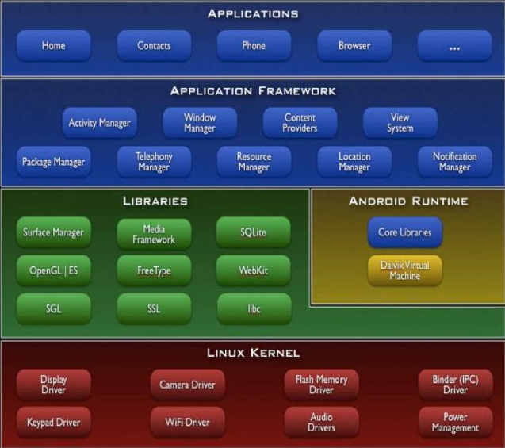

3.8. Android¶
3.8.1. 简介¶
Android是一种基于Linux的自由开源操作系统，主要用于移动设备，如智能手机和平板电脑，由Google公司和开放手机联盟领导及开发。
3.8.2. 系统框架¶

3.8.3. 安全机制¶
3.8.3.1. 进程沙箱隔离¶
Android应用程序在安装时被赋予独特的用户标识（UID），并永久保持。应用程序及其运行的Dalvik虚拟机运行在独立的Linux进程空间，与其他程序完全隔离。
3.8.3.2. 应用程序签名¶
基于共享内存的Binder实现，提供轻量级的RPC，通过AIDL定义接口和数据类型，确保不会溢出。
3.8.3.3. 内存管理机制¶
基于Linux的低内存管理机制OOM (Out Of Memory Killer)，设计实现了地图的LMK (Low Memory Killer) 机制。清理低级别进程的内存空间。
引入Ashmen，清理不再使用的共享内存区域。
3.8.3.4. 其它¶
权限声明机制
访问控制机制
进程通信机制
3.8.4. 组件¶
3.8.4.1. Activity¶
Activity(用户界面)是应用程序与用户进行人机交互的可视化用户界面，包含很多与用户交互的构件， 如按钮、文本输入框等。一个 Android 应用程序可以有多个 Activity。
Activity共有四种状态
Active：激活或运行，这时Activity在屏幕前台
Pause：暂停状态，这时Activity失去焦点，但对用户可见
Stop：停止状态，这时Activity被其他Activity覆盖而完全变暗
Inactive：终止状态，这时Activity被系统清理出内存
3.8.4.2. Service¶
Service(后台进程)是 Android 系统运行在后台的服务，不提供用户界面;
3.8.4.3. Content Provider¶
Content Provider(内容提供器)是一种 SQL-数据库，用于为应用程序提供数据，同时为应用程序中的数 据共享提供支持;
3.8.4.4. Broadcast Receivers¶
Broadcast Receivers(广播接收器)是接收广播消息的邮箱。
3.8.5. Dalvik¶
基于寄存器的虚拟机，完成对象生命周期、堆栈、线程的管理、安全和异常的管理以及垃圾回收等。每一个Android都运行在一个单独的Dalvik虚拟实例上。
3.8.6. APK结构¶
res目录：资源文件
META_INF：数字签名信息
lib目录：动态链接库
assets目录：原始格式的文件
resource.arsc文件：编译后的二进制资源文件
classes.dex：Dalvik可执行二进制文件
AndroidManifest.xml
3.8.7. 数据存储¶
Applications
/data/app/<package-name>/Shared Preferences Files
/data/app/<package-name>/shared_prefSQLite Database
/data/app/<package-name>/databasesInternal Storage
/data/app/<package-name>/files
3.8.8. 恶意软件分类¶
3.8.8.1. 按行为分¶
- 恶意软件安装(malware installation)
重打包(repackaging)
更新攻击(update attack)
诱惑下载(drive-by download)
其他
恶意软件运行(activation)
- 恶意载荷(malicious payloads)
提权攻击(privilege escalation)
远程控制(remote control)
付费(financial charge)
信息收集(information collection)
权限使用(permission uses)
3.8.8.2. 按类别分¶
木马类
病毒类
后门类
僵尸类
间谍软件类
恐吓软件类
勒索软件类
广告软件类
跟踪软件类